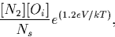

Our conclusion is that the structure shown in Figure 7.4 represents the NNO defect, the primary N-O complex in silicon. The NNO defect has no deep or shallow donor levels, and so is not responsible for shallow thermal donors (see Section 8).
The three atoms of the defect are only weakly dynamically coupled because of their inequivalence. The O atom is bound to the defect because the N-pair strains the lattice. The dissociation barrier of the NNO complex is then approximately the energy necessary for O to migrate to the barrier top starting from O lying between Si(6) and Si(5) and ending between Si(5) and Si(1). Taking the first figure to be that for Oi diffusion, 2.5 eV [4] and the second one as calculated here, 1.2 eV, we find this dissociation barrier to be 3.7 eV. The equilibrium concentration of NNO defects would equal,

where Ns is the density of bond-center sites for Oi. The formation energy of NNO from N2 and O defects is estimated to be around 1.2 eV which gives a concentration of NNO equal to that of N2 below 800
We remark that as the trapping of O by N pairs has been attributed to
the strain field surrounding the pair, then this mechanism would be
also be expected to operate for other impurities. H and F would behave
like O. However, C would be expected to substitute for Si atoms
compressed by the pairs whereas Ge and substitutional transition
metals would replace Si atoms subject to tensile stress. This would
lead to  011
011 oriented aggregates.
oriented aggregates.
In addition we conclude that the 813 and 1020 cm-1 vibrational modes are produced by the NiOi defect. This is present in much smaller concentrations than the standard NNO defect, and acts as a deep donor defect similar to Ni. It will form as a pre-cursor to either NNO or the NiO2i shallow thermal donor, depending on whether it traps Ni or Oi, and this adds weight to our claim that NiO2i can form in N/O codoped material (see Chapter 8). The two models examined above differ in that the NNOO model has no gap levels at all, whereas the NiOi model has a single deep donor state. Therefore it should be possible to experimentally verify that the defect is NiOi rather than NNOO, for example through detection of an associated deep level using DLTS (although this may prove difficult to distinguish from other centres in the material) or else electronic transition IR.
An important question that needs to be addressed when discussing the kinetics and formation of N/O defects is the migration process for N2 pairs. It is currently unknown whether the N atoms are able to diffuse as a pair, or have to break up into individual Ni before diffusing and later recombining. An experiment which may be able to distinguish between these two is as follows [182]. A sample should be ion implantated using 14N and briefly annealed, so the N forms pairs of 14N. The sample is then similarly ion implanted, but using 15N; another quick anneal should pair these atoms off, leaving a collection of 14N and 15N nitrogen pairs, but very few mixed isotope pairs. This can be verified by FTIR, before performing a longer time anneal. If, after the annealing, the sample shows a spread of pure and mixed isotope pairs, then this suggests the pairs are breaking up and reforming. However if the pure isotopic pairs are maintained then it suggests that the N atoms diffuse as a pair.